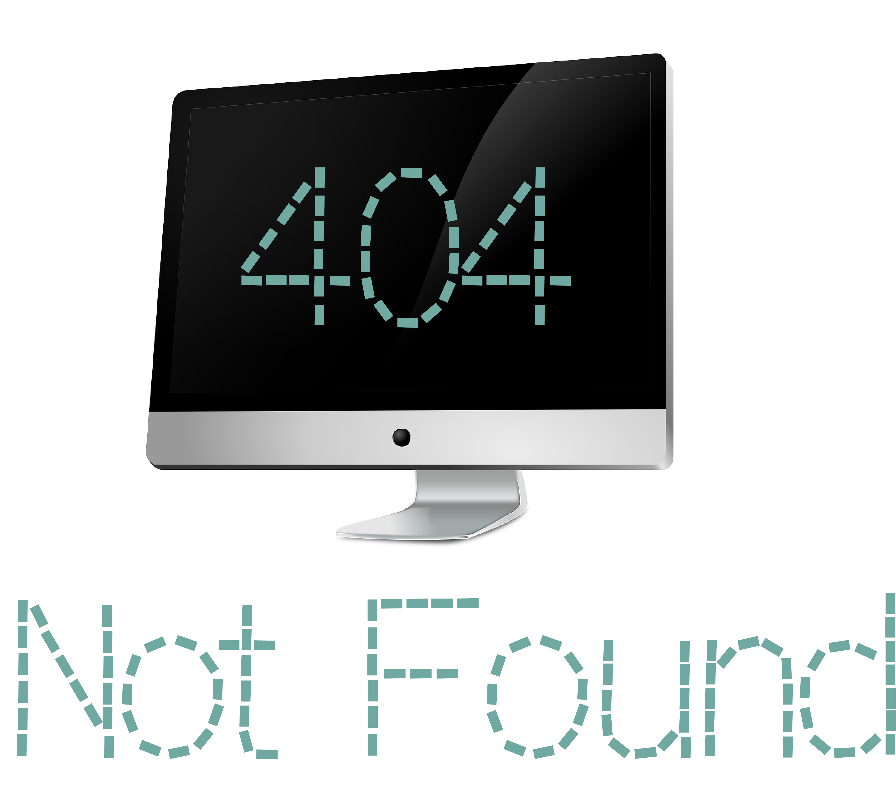

<div fxLayout="column">
  <mat-card fxFlex style="margin-top: 15%; width: 50%; margin-left: 25%;" class="mat-elevation-z8">
    
    <br/>

    <mat-card-content style="text-align: center;">
      <button mat-raised-button color="primary" routerLink="/">Return to Dashboard</button>
    </mat-card-content>
  </mat-card>
</div>
